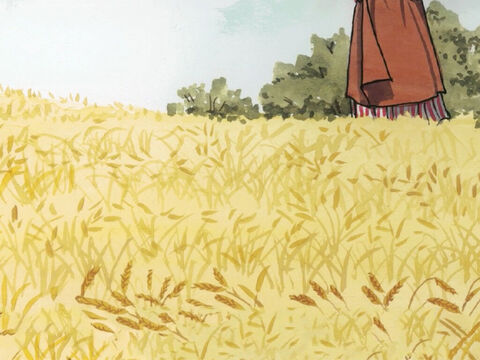
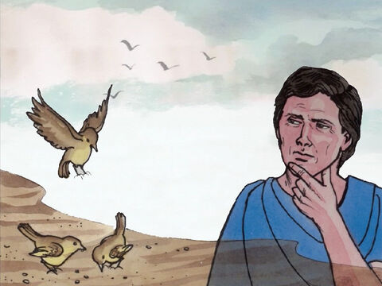
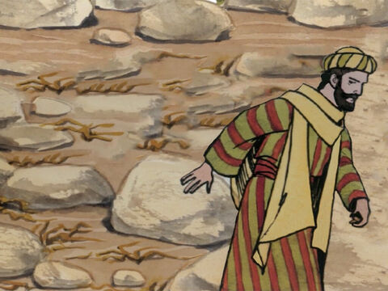
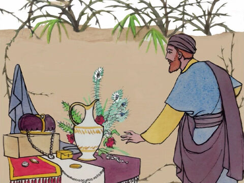

The Parable Of The Sower
The same day went Jesus out of the house, and sat by the sea side.
And great multitudes were gathered together unto him, so that he went into a ship, and sat; and the whole multitude stood on the shore.
And he spake many things unto them in parables, saying, Behold, a sower went forth to sow;
And when he sowed, some seeds fell by the way side, and the fowls came and devoured them up:
Some fell upon stony places, where they had not much earth: and forthwith they sprung up, because they had no deepness of earth:
And when the sun was up, they were scorched; and because they had no root, they withered away.
And some fell among thorns; and the thorns sprung up, and choked them:
But other fell into good ground, and brought forth fruit, some an hundredfold, some sixtyfold, some thirtyfold.
Who hath ears to hear, let him hear.
Matthew 13:1-9


- 
Hear ye therefore the parable of the sower.
When any one heareth the word of the kingdom, and understandeth it not, then cometh the wicked one, and catcheth away that which was sown in his heart. This is he which received seed by the way side.
But he that received the seed into stony places, the same is he that heareth the word, and anon with joy receiveth it;
Yet hath he not root in himself, but dureth for a while: for when tribulation or persecution ariseth because of the word, by and by he is offended.
He also that received seed among the thorns is he that heareth the word; and the care of this world, and the deceitfulness of riches, choke the word, and he becometh unfruitful.
But he that received seed into the good ground is he that heareth the word, and understandeth it; which also beareth fruit, and bringeth forth, some an hundredfold, some sixty, some thirty.
Matthew 13:18-23
- 
- 
- 